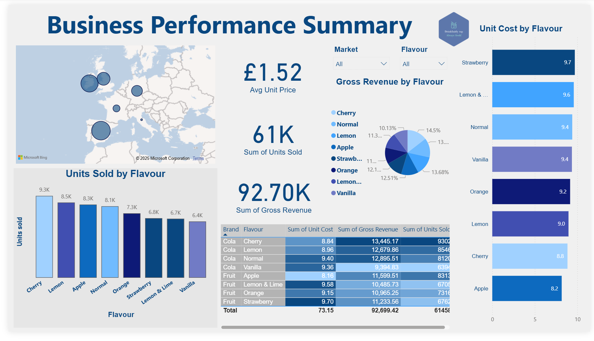
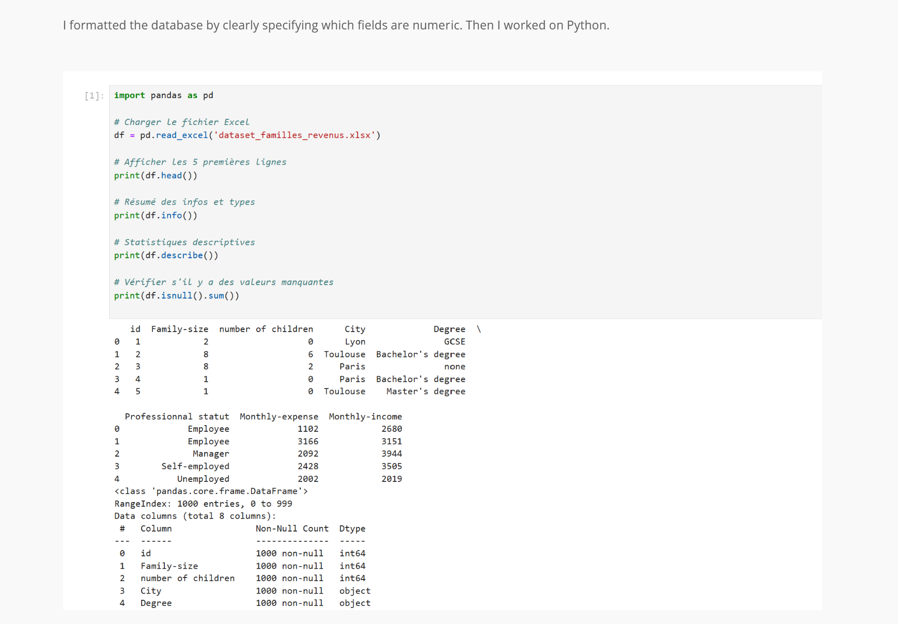
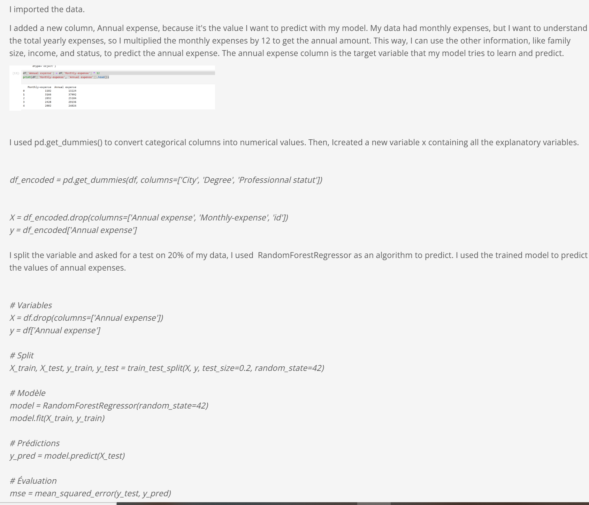
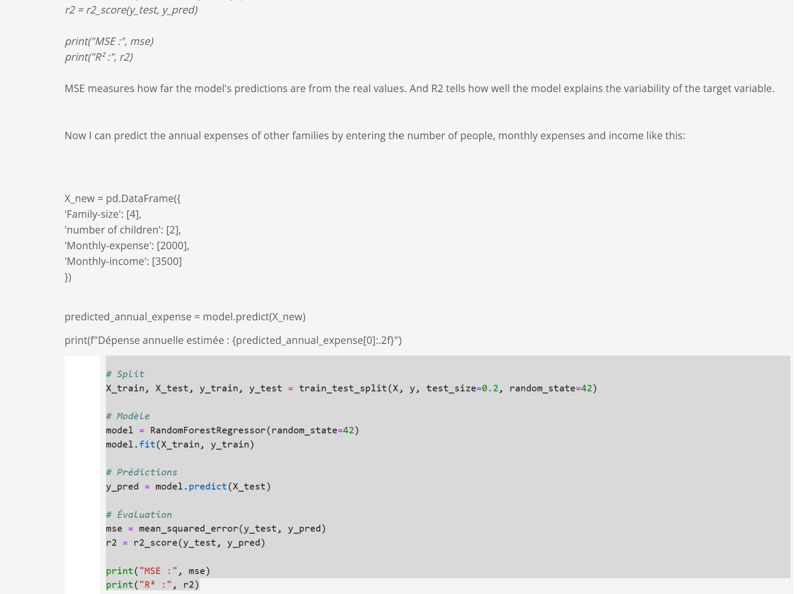
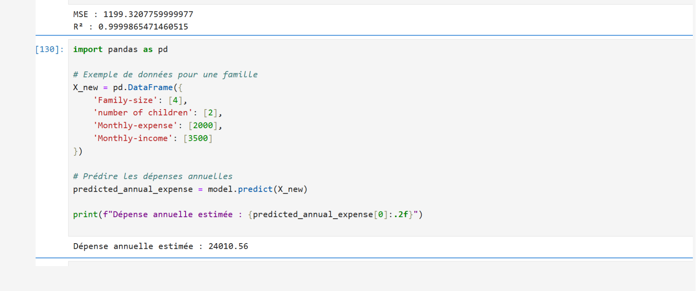
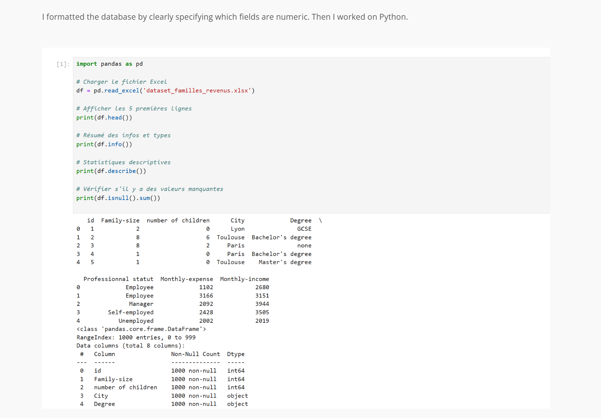
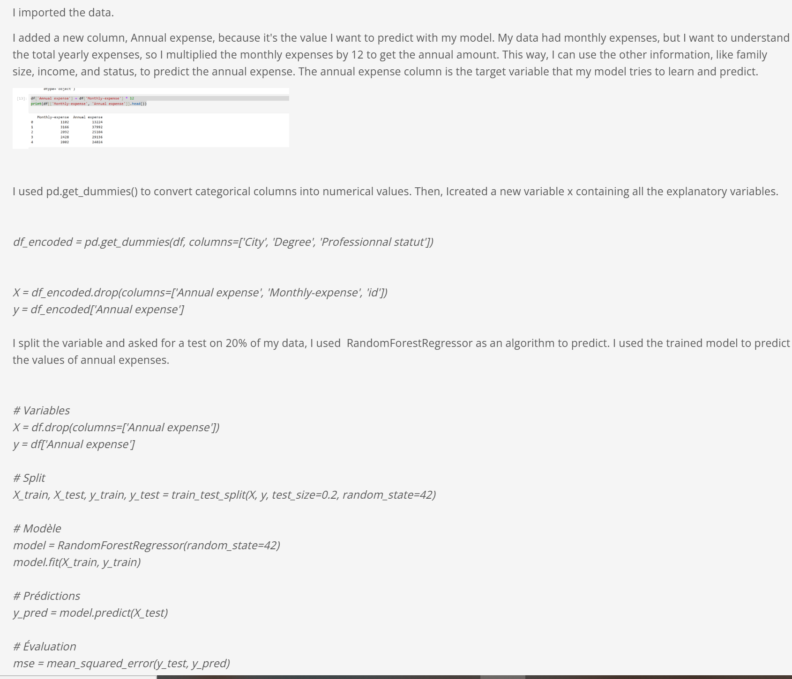
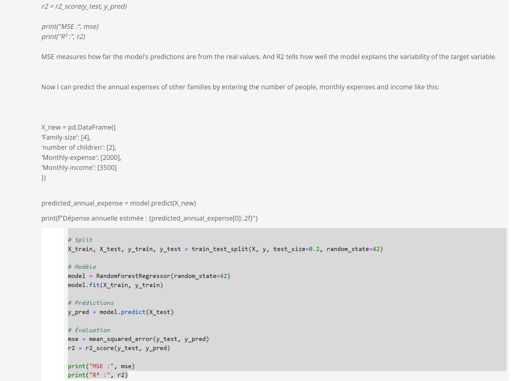
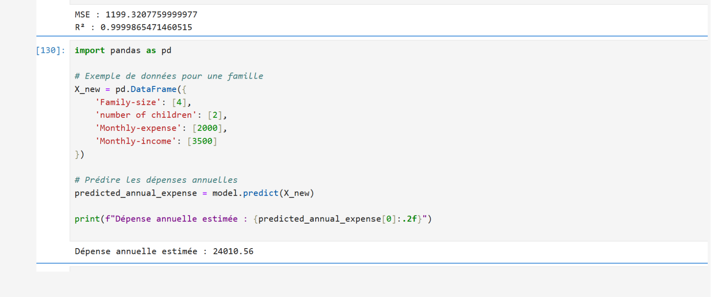
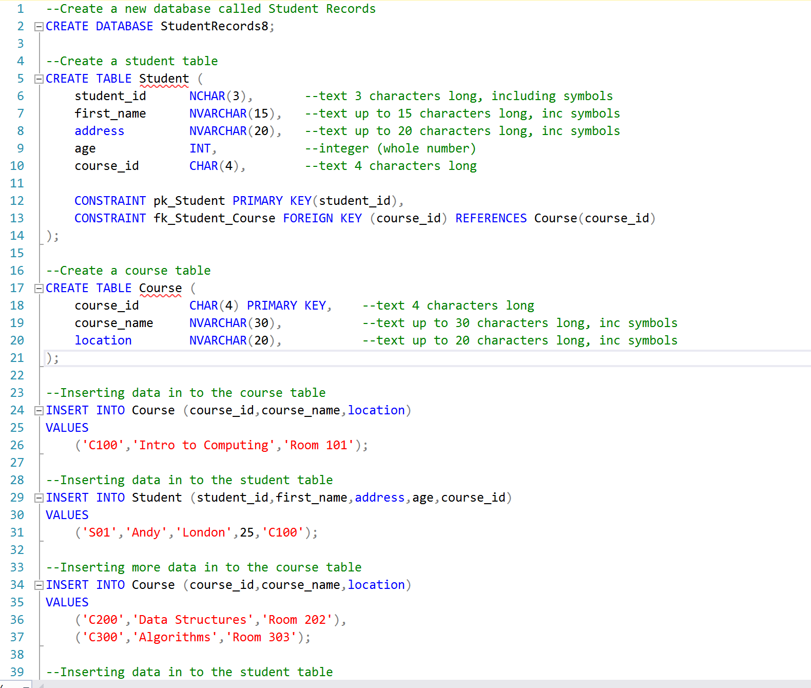

Featured Projects
📊 Power BI – Apple's revenue
For this project, I started by collecting Apple’s revenue dataset from bullfincher.io. I cleaned and transformed the data to make it usable in Power BI, ensuring consistency across regions and fiscal years. Then, I designed an interactive dashboard to visualise Apple’s revenue distribution across the Americas, Europe, Greater China, Japan, and Asia-Pacific (excluding Japan) for the years 2022, 2023, and 2024. To highlight different insights, I used a combination of visuals: a bar chart for comparing regional market shares, a donut chart for a snapshot of one year, stacked columns and line charts to analyse trends over time, and slicers to filter by year or region. I also created a filled map with pie chart markers to connect the data to geography and make the results easier to interpret. Through this dashboard, I was able to identify clear business insights: the Americas remain Apple’s largest market but show a slight decline, Europe demonstrates steady growth, and Greater China shows a consistent decrease that requires deeper investigation. Based on this, I suggested increasing marketing investments in Europe, reassessing the strategy in the Americas, and lowering the growth forecast for Greater China. This project demonstrates key data analyst skills such as data cleaning and transformation, dashboard design in Power BI, use of different visualisation techniques for comparative and trend analysis, and the ability to interpret data into actionable business recommendations..
 View Dashboard
View Dashboard
 View Dashboard
View Dashboard
📊 Power BI – Business Performance Summary
This interactive dashboard provides a comprehensive analysis of product performance by flavour in the UK market. It highlights key metrics such as units sold, gross revenue, and unit cost through clear and strategic visualizations. Built with Power BI, this project showcases my ability to turn complex data into actionable insights, while demonstrating skills in data visualization, storytelling, and business-oriented analysis.  View Dashboard
{kind=link}
🧼 Phyton –Predictive data analytics
Perform predictive data analytics based on a dataset using algorithms and analyse the outcome of data findings.
 







🧼 SQL project presentation
I developed a relational database called StudentRecords to simulate a real-world academic system. This project allowed me to apply SQL fundamentals to structure and manage student and course information in a scalable and coherent way. I began by creating the database and defining two core tables: one for students and one for courses. The Student table includes personal and demographic details such as ID, name, address, age, gender, and location, while the Course table stores course identifiers, names, and locations. To ensure data integrity, I implemented a primary key on the student ID and planned a foreign key to link each student to a course. Although the foreign key constraint required adjustment in the script, identifying and correcting this issue was part of the learning process. I inserted sample data into both tables, including two courses and one student enrolled in one of them, which helped validate the structure and relationships within the database. This project demonstrates my understanding of relational modeling, my attention to detail in defining constraints, and my ability to troubleshoot and refine SQL scripts. It marks an important step in my progression toward advanced data analytics, and reflects my commitment to building reliable systems that support meaningful insights. I plan to expand this work by normalizing the schema further, writing JOIN queries to extract cross-table information, and integrating the database with tools like Python or Power BI for visualization and reporting.
🌐 Portfolio Website
Designed and coded this portfolio using HTML/CSS. Focused on layout, centering, and responsive design.
Visit Site